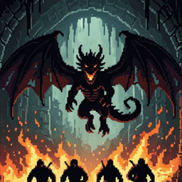

Да
Нет
Затаиться
❖ Плащ
≋ Сквозь стены
Пропустить ход
?
d4
✚
✹
†
☘
»
➰
⛨
⚒
†
⚷
❖
≋
♨
🎒
💬
⊕
☰

Эпичное приключение
Логово дракона
Дракон спит. Пока что.
VK
Наше сообщество ВКонтакте
⏻ Выход
Разработано: 2026 г. студия 514-lab!
Конфиденциальность
Закрыть
← Назад
Дальше →
?
Понятно
Выключить подсказки
💬
Чат
✕
➤
Тапните по кубику
?
d4
Нажми, чтобы бросить
d20
Лист персонажа
Показать на карте
Закрыть